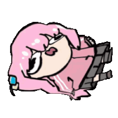

Bienvenido a mi web!
Aprendiendo...
Sobre mi
Holaa :D
Holaaa, soy Martin y estoy aprendiendo a programar, esta pagina es mi primer proyecto y si te soy sincero ha sido realemente complicado hacerla, quiero seguir dandole mejoras a medida que vaya aprendiendo pero por el momento quedo muy feliz con el resultado, actualmente tengo 17 años y estoy cursando mi ultimo año de preparatoria, en estos momentos estoy cumpliendo un sueño que solo lo veia como un lejano futuro y eso es gracias a mis amigos que me ayudaron a iniciar en esto, un poco sobre mis gustos, me gusta mucho la tecnologia y las computadoras en general, tmb me gusta mucho la estica moe y retro, bueno en general las cosas lindas y tmb geniales, soy una persona algo timida y aveces me cuesta el hablar con otras personas, tmb creo que soy un poco creativo y no me considero alguien fuerte o inteligente pero quiero esforzarme por mi futuro, perdon, no se que mas decir :(

Proyectos
En lo que he trabajado
Proximamente...
Musica
Mi zona musical
Holaaa, aqui pondré las canciones que me gustan, tengo gustos musicales muy variados, la verdad me gusta escuchar casi de todo pero de mis géneros favoritos esta el punk, el nu metal y el jpop

Aqui pondre una lista de algunas de mis canciones favoritas
STYX HELIXHobbies
Mis hobbies y gustos
En esta seccion tmb podras conocer un poco mas sobre mis gustos y lo q suelo hacer :D en mi dia a dia suelo realizar distintos tipo de actividades, como ver tele, leer, dibujar, deporte, aveces cocino, y estaba empezando tmb a escribir, en el mundo deportivo siempre me han gustado los deportes de contacto como el boxeo, aveces siento que soy alguien explosivo y el boxeo ha sido esa forma de liberar la ira y el estres, tmb me gusta andar en bicicleta y en moto y recien empece a ir al gym, pero me duele mucho los brazos, en las tardes suelo ver anime o leer algun manga de mis favoritos son Re Zero,Tower Dungeon, Yotsuba to!!, Nichijou, Hunter x Hunter, ..., podria hacer una lista muy larga sobre esto, ahora estoy leyendo una nueva obra que saco el autor de Gintama, que tiene un humor demasiado absurdo, se las recomiendo es buenisima se llama 2-nen B-gumi Yuusha Destroyers, tmb suelo jugar videojuegos, mas ahora que tengo una pc que tiene mejor rendimiento, de mis juegos favoritos estan la saga de Danganronpa, la saga de Persona, DDLC, Muse Dash, etc, aun tengo muchos juegos que quiero probar pero esos son los q mas me han gustado, aveces trato de dibujar, pero no soy muy bueno, pero me gusta hacerlo, al igual que cocinar, me ilusiono mucho a principio, pero siempre termino decepcionado pq se me termina quemando algo :(, y ahora programar tmb se ha vuelto parte de mi dia, espero poder aprender mucho de esto y realizar muchos proyectos, conocer gente y mas, gracias :D